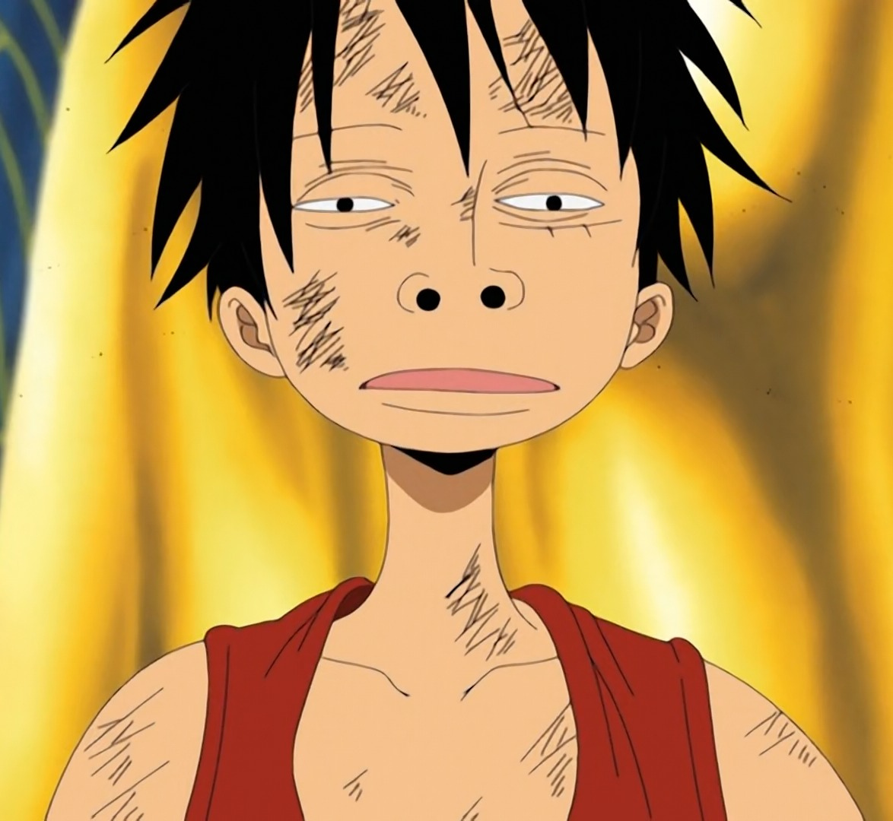
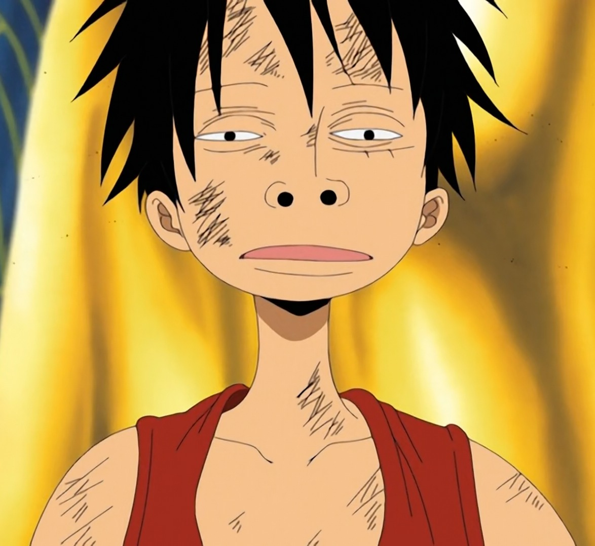
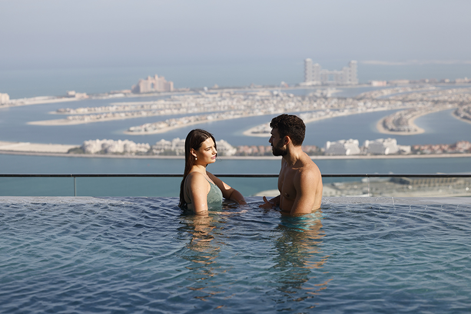
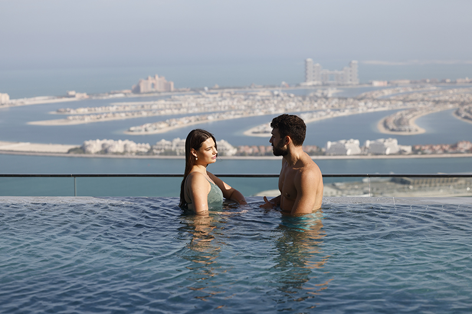

"My name is Glenn Russell P. Cristobal and I'm 18 years old. I was born on July 28,2005 in Las Piñas Hospital.
I grew up in Alapan 1-C Imus City, Cavite, in a small yet loving family.""
 

"My hobbies are playing computer games like Valorat, DOTA 2, League of legends and many more.
I also love watching anime and some TV Series."

"I chose computer science because I felt that my passion is on computers and Einstein also inspired me
in this field because of his theory about time travel, so maybe one day I'll make a time travelling machine.""

 

"Nahhhhhh, I'm just joking. I only want to be filthy rich and travel around the world."
that's why I chose this course in college, hehe.